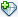

Creating a C or C++ Watch
See Also
A watch enables you to track the changes in the value of a variable
or expression during program execution. The Watches window lists
all of the watches you have defined for all of your IDE projects.
You can open the Watches window by choosing Window > Debugging >
Watches (Alt-Shift-2).
To create a watch:
-
In the Watches window, double-click <Enter new watch>
and type the variable or expression in the text field that
is displayed.
- Or do the following:
- Open the New Watch dialog box
by:
-
Selecting the variable or expression in the Source Editor and choosing Debug >
New Watch, or right-clicking and select New Watch.
- Right-clicking in the Watches window and choosing New Watch.
- Clicking the Create New Watch button
 in the Variables window.
-
The New Watch dialog box opens. If you selected the
variable or expression in the Source Editor it is automatically
entered in the text field.
-
Click OK.
The Watches window opens with the new watch selected.
Notes:
-
When you specify an expression, follow the syntax rules of the
language that you are using.
-
When you create a watch, the value of the variable or expression is
immediately evaluated and displayed in the Watches window. The
value of the watch is based on the current context. When you change
the current context, the Watches window is updated to show the
value of the watch for that context.
Copyright © 2015, Oracle and/or its affiliates. All rights reserved.